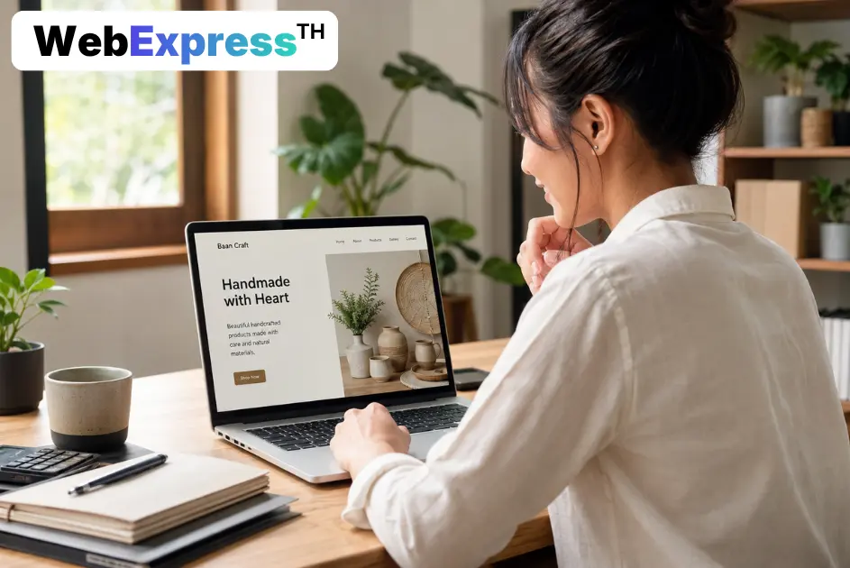

ในปี 2025 ประเทศไทยมีผู้ใช้อินเทอร์เน็ตกว่า 65.4 ล้านคน คิดเป็น 92.2% ของประชากรทั้งหมด (DataReportal, Digital in Thailand 2025) และผู้บริโภค 81% ค้นหาข้อมูลสินค้าหรือบริษัทออนไลน์ก่อนตัดสินใจซื้อทุกครั้ง ถ้าธุรกิจของคุณไม่มีเว็บไซต์ คุณไม่มีตัวตนในการค้นหาเหล่านั้นเลยสักครั้ง
หลายเจ้าของธุรกิจขนาดเล็กในไทยยังเชื่อว่า Facebook Page หรือ LINE OA เพียงพอแล้ว แต่ความจริงคือสองสิ่งนี้ทำงานต่างกันโดยสิ้นเชิง โซเชียลมีเดียสร้างการรับรู้ได้ดี แต่เว็บไซต์สร้างความน่าเชื่อถือและดึงลูกค้าใหม่จาก Google ได้ตลอด 24 ชั่วโมงโดยไม่ต้องจ่ายค่าโฆษณาเพิ่ม
คู่มือนี้เขียนขึ้นสำหรับเจ้าของธุรกิจที่อยากเริ่มทำเว็บไซต์แต่ยังไม่รู้จะเริ่มจากไหน เราจะพาคุณผ่านทุกเรื่องที่ต้องรู้ ตั้งแต่ค่าใช้จ่าย, โดเมน, โฮสติ้ง, การออกแบบ, ไปจนถึง SEO และการเลือกว่าควรทำเองหรือจ้างมืออาชีพ
ข้อสังเกตจากประสบการณ์จริง: ธุรกิจที่มีเว็บไซต์ที่ดีมักได้ลูกค้าใหม่จาก Google โดยไม่ต้องจ่ายค่าโฆษณาเพิ่มเลย แค่มีเว็บไซต์ที่โหลดเร็วและมีเนื้อหาตรงกับสิ่งที่ลูกค้าค้นหาก็เพียงพอ
สรุปบทความ
- ในปี 2025 ไทยมีผู้ใช้อินเทอร์เน็ต 65.4 ล้านคน และ 81% ค้นหาข้อมูลออนไลน์ก่อนซื้อทุกครั้ง (DataReportal, 2025)
- ค่าใช้จ่ายทำเว็บไซต์ธุรกิจเริ่มต้นตั้งแต่ไม่กี่พันบาท/ปี (DIY) ไปจนถึงหลักแสนบาทสำหรับงาน Custom
- เว็บไซต์โหลดช้ากว่า 3 วินาทีสูญเสียผู้เข้าชม 53% — ความเร็วสำคัญพอๆ กับดีไซน์
- ก่อนจ้างทำเว็บไซต์ ต้องเตรียมโดเมน เนื้อหา รูปภาพ และเป้าหมายธุรกิจให้ชัดเจน
ทำไมธุรกิจถึงต้องมีเว็บไซต์
ในปี 2024 ผู้บริโภค 81% ค้นหาข้อมูลสินค้าหรือบริการออนไลน์ก่อนตัดสินใจซื้อทุกครั้ง (Think with Google, 2024) และ 31% บอกว่าเคยตัดสินใจไม่ซื้อจากธุรกิจนั้น เพียงเพราะหาเว็บไซต์ไม่เจอ ในยุคที่การค้นหาออนไลน์คือจุดเริ่มต้นของการตัดสินใจซื้อเกือบทุกครั้ง การไม่มีเว็บไซต์เท่ากับไม่มีตัวตนในสายตาลูกค้า

เว็บไซต์ vs โซเชียลมีเดีย: ต่างกันอย่างไร
หลายคนคิดว่า Facebook Page ทำหน้าที่เหมือนเว็บไซต์ได้ แต่มีความแตกต่างสำคัญ 3 ข้อที่ส่งผลต่อธุรกิจโดยตรง:
- ความน่าเชื่อถือ — ลูกค้า B2B และลูกค้าที่ต้องการความมั่นใจสูงมักคาดหวังให้ธุรกิจมีเว็บไซต์เป็นของตัวเอง ไม่ใช่แค่หน้า Facebook
- การค้นหาบน Google — โพสต์ Facebook ไม่ปรากฏบน Google Search ส่วนเว็บไซต์ปรากฏได้ตลอด 24 ชั่วโมง
- ความเป็นเจ้าของ — Facebook สามารถปิดบัญชีหรือเปลี่ยน Algorithm ได้ตลอดเวลา แต่เว็บไซต์คือทรัพย์สินดิจิทัลที่คุณควบคุมได้เอง
มุมมองที่คนมักมองข้าม: เว็บไซต์ธุรกิจที่ดีไม่ใช่แค่ "นามบัตรออนไลน์" แต่คือช่องทางสร้างรายได้ที่ทำงานอยู่ตลอดเวลา แม้คุณจะนอนหลับก็ตาม
เว็บไซต์ธุรกิจต้องใช้งบเท่าไหร่
ค่าใช้จ่ายในการทำเว็บไซต์ธุรกิจมีความหลากหลายมาก ขึ้นอยู่กับว่าคุณจะทำเองหรือจ้างมืออาชีพ โดยทั่วไปแบ่งได้ 3 ระดับ ตั้งแต่หลักพันบาทต่อปีไปจนถึงหลักแสนบาทสำหรับงานที่ซับซ้อน (Shopify Blog, 2025)
ทำเองด้วย Website Builder
แพลตฟอร์มอย่าง Wix, Squarespace หรือ Shopify ช่วยให้คุณสร้างเว็บไซต์ได้เองโดยไม่ต้องเขียนโค้ด ค่าใช้จ่ายอยู่ที่ราว $15–50 ต่อเดือน (ประมาณ 500–1,800 บาท) และมี Template สำเร็จรูปให้เลือกมากมาย
เหมาะสำหรับ: ธุรกิจที่เพิ่งเริ่มต้น, งบน้อย, ต้องการเปิดตัวเร็วใน 1–2 สัปดาห์
WordPress + Hosting
WordPress ฟรีแต่ต้องจ่ายค่าโฮสติ้งและโดเมน ค่าใช้จ่ายเริ่มต้นประมาณ 3,000–10,000 บาทต่อปี WordPress ครองส่วนแบ่งตลาดเว็บไซต์ทั่วโลกมากกว่า 40% เพราะยืดหยุ่นและมีปลั๊กอินให้เลือกใช้นับหมื่น สามารถทำเองหรือจ้างนักพัฒนาอาชีพได้
เหมาะสำหรับ: ธุรกิจที่ต้องการควบคุมได้เอง, มีเนื้อหาเยอะ, ต้องการทำ SEO จริงจัง
จ้างนักพัฒนาหรือเอเจนซี่
การจ้างมืออาชีพออกแบบและพัฒนาเว็บไซต์แบบ Custom มีค่าใช้จ่ายตั้งแต่หลักพัน สำหรับเว็บไซต์ประชาสัมพันธ์แบบง่าย ไปจนถึงหลักแสนบาทขึ้นไปสำหรับเว็บไซต์ที่มีความซับซ้อน
เหมาะสำหรับ: ธุรกิจที่ต้องการฟีเจอร์พิเศษ, ดีไซน์ที่โดดเด่น, และมีงบลงทุนพร้อม
ค่าใช้จ่ายรายปีที่ต้องวางแผน
นอกจากค่าสร้างเว็บไซต์แล้ว ยังมีค่าใช้จ่ายต่อเนื่องที่ต้องเตรียม:
| รายการ | ราคาโดยประมาณ/ปี |
|---|---|
| โดเมน (.com) | 300–600 บาท |
| Hosting | 600–2,400 บาท |
| SSL Certificate | ฟรี |
| ดูแลรักษา (ถ้าจ้าง) | 1,000–60,000 บาท ขึ้นอยู่กับความซับซ้อนของเว็บไซต์ |
โดเมนและโฮสติ้งคืออะไร
โดเมนและโฮสติ้งคือสองส่วนพื้นฐานที่เว็บไซต์ทุกเว็บต้องมี เปรียบได้ว่าโดเมนคือ "ที่อยู่" และโฮสติ้งคือ "ที่ดิน" ที่ตั้งอาคาร ถ้าขาดสิ่งใดสิ่งหนึ่ง เว็บไซต์ไม่มีทางออนไลน์ได้เลย

โดเมน (Domain) คืออะไร
โดเมนคือชื่อเว็บไซต์ที่ผู้ใช้พิมพ์เพื่อเข้าถึงเว็บไซต์ของคุณ เช่น yourbusiness.com หรือ yourbusiness.co.th โดเมนดีควรมีคุณสมบัติเหล่านี้:
- จำง่าย ออกเสียงง่าย — ชื่อที่บอกต่อทางโทรศัพท์ได้ทันทีโดยไม่ต้องสะกด
- สั้น — ยิ่งสั้นยิ่งดี ไม่ควรเกิน 2–3 คำ
- ไม่มีเครื่องหมาย - หรือตัวเลขโดยไม่จำเป็น — ทำให้จำยากและดูไม่เป็นมืออาชีพ
- .com vs .co.th — .com เป็นสากลและคุ้นเคย แต่ .co.th สื่อถึงธุรกิจไทยชัดเจนกว่า
โฮสติ้ง (Hosting) คืออะไร
โฮสติ้งคือบริการเช่าพื้นที่บนเซิร์ฟเวอร์เพื่อเก็บข้อมูลเว็บไซต์ของคุณ มีหลายประเภทที่เหมาะกับขนาดธุรกิจต่างกัน:
| ประเภท | เหมาะกับ | ราคา/เดือน (บาท) |
|---|---|---|
| Shared Hosting | เว็บใหม่, ทราฟฟิกน้อย | 50–200 |
| VPS Hosting | ทราฟฟิกปานกลาง | 500–3,000 |
| Cloud Hosting | ยืดหยุ่น, scale ได้ | 200–5,000 |
| Dedicated Server | ทราฟฟิกสูง, e-commerce ใหญ่ | 5,000+ |
สำหรับธุรกิจขนาดเล็กถึงกลางที่เพิ่งเริ่มต้น Shared Hosting หรือ Cloud Hosting ก็เพียงพอแล้ว ไม่จำเป็นต้องลงทุนกับ Dedicated Server ตั้งแต่แรก
เคล็ดลับ: เลือก Hosting ที่มีเซิร์ฟเวอร์อยู่ในไทยหรือสิงคโปร์ จะทำให้เว็บไซต์โหลดเร็วกว่าสำหรับผู้เข้าชมในประเทศไทยอย่างเห็นได้ชัด
ออกแบบเว็บไซต์ต้องคิดถึงอะไร
การออกแบบเว็บไซต์ที่ดีไม่ได้แปลว่าต้องสวยที่สุด แต่ต้องใช้งานง่ายที่สุด และต้องแสดงผลได้ดีบนมือถือก่อนเป็นอันดับแรก เพราะในปี 2025 ทราฟฟิกเว็บทั่วโลก 64% มาจากอุปกรณ์มือถือ (StatCounter via Agile Brand Guide, 2025) — และในไทยตัวเลขนี้สูงกว่าค่าเฉลี่ยโลกอีกด้วย
หลักการออกแบบที่สำคัญ 4 ข้อ
1. Mobile-First Design
ออกแบบให้หน้าจอมือถือก่อนแล้วค่อยขยายไป Desktop ไม่ใช่กลับกัน เว็บไซต์ที่ใช้งานบนมือถือไม่ดีจะสูญเสียลูกค้าส่วนใหญ่ก่อนที่พวกเขาจะอ่านข้อมูลของคุณเลย
2. Navigation ที่ชัดเจน
ลูกค้าต้องหาสิ่งที่ต้องการได้ภายใน 3 คลิก เมนูที่ซับซ้อนเกินไปทำให้ผู้ใช้หงุดหน่ยและออกจากเว็บไซต์ก่อนเวลา
3. Call-to-Action (CTA) ที่ชัดเจน
ทุกหน้าต้องบอกให้ผู้เข้าชมรู้ว่าต้องทำอะไรต่อไป เช่น "ติดต่อเรา", "ดูราคา", "สั่งซื้อเลย" — CTA เดียวที่ชัดเจนสร้าง Conversion ได้มากกว่าหลาย CTA ที่กระจัดกระจาย
4. ความสอดคล้องของแบรนด์
สี ฟอนต์ และโทนภาษาต้องสอดคล้องกันตลอดทั้งเว็บ เพื่อสร้างความจดจำและความน่าเชื่อถือ

จากประสบการณ์: เว็บไซต์ที่ดีที่สุดไม่ใช่เว็บที่สวยที่สุด แต่เป็นเว็บที่ตอบคำถามลูกค้าได้ชัดเจนที่สุดในเวลาน้อยที่สุด หน้าแรกควรบอกให้ได้ภายใน 5 วินาทีว่าธุรกิจของคุณทำอะไร และทำไมลูกค้าถึงควรเลือกคุณ
SEO คืออะไรและทำไมต้องสนใจ
SEO (Search Engine Optimization) คือกระบวนการปรับแต่งเว็บไซต์ให้ติดอันดับสูงขึ้นบน Google โดยไม่ต้องจ่ายค่าโฆษณา ในปี 2025 การค้นหาแบบ Organic ยังสร้างทราฟฟิก 53% ของเว็บไซต์ทั้งหมด (SEOInc, 2025) และผลลัพธ์ 3 อันดับแรกบน Google รับคลิกรวมกันถึง 54.4% ของการค้นหาทั้งหมด

ถ้าธุรกิจของคุณติดอันดับ 1–3 บน Google สำหรับคำค้นหาที่ลูกค้าใช้ คุณได้ลูกค้าใหม่ฟรีทุกวันโดยไม่ต้องจ่ายค่า Ads เพิ่ม นั่นคือพลังของ SEO
SEO พื้นฐาน 4 ข้อที่ต้องทำตั้งแต่เริ่ม
1. เลือก Keyword ที่ตรงกับลูกค้า
ลูกค้าของคุณใช้คำอะไรค้นหาธุรกิจแบบคุณ? ใช้คำนั้นในชื่อหน้า, หัวข้อ, และเนื้อหาของเว็บไซต์ อย่าเดาเอง ใช้ Google Keyword Planner หรือ Google Search Console ดูข้อมูลจริง
2. เขียนเนื้อหาที่มีประโยชน์
Google ให้คะแนนเว็บไซต์ที่มีเนื้อหาตอบคำถามลูกค้าได้จริง ไม่ใช่เว็บที่ยัดคีย์เวิร์ดเต็มไปหมดโดยไม่มีสาระ คุณภาพของเนื้อหามีน้ำหนักมากกว่าปริมาณเสมอ
3. Technical SEO พื้นฐาน
เว็บไซต์ต้องโหลดเร็ว, แสดงผลบนมือถือได้ดี, มี SSL (https://), และมี XML Sitemap ให้ Google รวบรวมข้อมูลได้สะดวก
4. สร้าง Google Business Profile
ฟรีและใช้เวลาแค่ 15 นาที ช่วยให้ธุรกิจของคุณปรากฏบน Google Maps และ Search เมื่อคนค้นหาธุรกิจในพื้นที่ของคุณ ขาดไม่ได้สำหรับธุรกิจที่มีหน้าร้านหรือให้บริการในพื้นที่เฉพาะ
มุมมองที่น่าสนใจ: SEO ไม่ใช่แค่เรื่องเทคนิค แต่คือเรื่องของการเข้าใจว่าลูกค้าของคุณมีคำถามอะไร และการตอบคำถามนั้นให้ดีที่สุด เว็บไซต์ที่ตอบคำถามลูกค้าได้ดีจะได้รับทราฟฟิกฟรีจาก Google อย่างต่อเนื่อง โดยไม่ต้องจ่ายค่าโฆษณาซ้ำทุกเดือน
เลือก Platform หรือจ้างนักพัฒนา
การเลือกว่าจะทำเว็บเองหรือจ้างมืออาชีพเป็นหนึ่งในคำถามที่เจ้าของธุรกิจถามบ่อยที่สุด คำตอบขึ้นอยู่กับ 3 ปัจจัยหลัก: งบประมาณ, ความซับซ้อนของฟีเจอร์ที่ต้องการ, และเวลาที่มีให้จัดการ
เมื่อไหร่ที่ควรทำเองด้วย Website Builder
Website Builder เหมาะถ้าคุณ:
- ต้องการเปิดตัวเร็วภายใน 1–2 สัปดาห์
- งบจำกัด (ต่ำกว่า 5,000 บาท/ปี)
- เนื้อหาไม่ซับซ้อน (เว็บประชาสัมพันธ์, portfolio, ร้านค้าเล็กๆ)
- ต้องการอัปเดตเนื้อหาได้เองโดยไม่พึ่งนักพัฒนา
- ยอมรับได้ว่าเว็บไซต์ของคุณจะคล้ายกับเว็บอื่นๆ เนื่องจากส่วนใหญ่ใช้ template ใกล้เคียงกัน
Platform ยอดนิยม: Wix, Squarespace, Shopify (สำหรับ e-commerce)
เมื่อไหร่ที่ควรจ้างนักพัฒนา
การจ้างผู้เชี่ยวชาญเหมาะถ้าคุณ:
- ต้องการดีไซน์ที่ไม่เหมือนใครและสะท้อนแบรนด์ได้ชัดเจน
- ต้องการผู้เชี่ยวชาญดูแล SEO และ Performance ตั้งแต่ต้น
- ต้องการฟีเจอร์พิเศษที่ Website Builder ทำไม่ได้ (ระบบสมาชิก, ชำระเงิน, API เชื่อมต่อระบบหลังบ้าน)
- มีงบลงทุนตั้งแต่ 10,000–20,000 บาทขึ้นไป
WordPress: ตรงกลางที่คุ้มค่าสำหรับธุรกิจส่วนใหญ่
WordPress คือตัวเลือกยอดนิยมที่อยู่ระหว่างทั้งสอง คุณสามารถจ้างนักพัฒนาติดตั้งและออกแบบครั้งแรก แล้วจัดการเนื้อหาเองในภายหลัง ทำให้ประหยัดค่าใช้จ่ายระยะยาวได้มาก
ข้อดีของ WordPress:
- CMS ฟรีและ Open Source
- มีปลั๊กอินสำหรับทำทุกอย่าง (SEO, ฟอร์ม, e-commerce, ฯลฯ)
- มีชุมชนนักพัฒนาและแหล่งเรียนรู้ขนาดใหญ่
- สามารถขยายได้ตามการเติบโตของธุรกิจ
ข้อควรระวัง:
- ต้องดูแลอัปเดต Plugin และ Theme อยู่สม่ำเสมอ
- ถ้าไม่มีประสบการณ์ อาจโดน Hack ได้ถ้าตั้งค่า Security ไม่ถูกต้อง
สิ่งที่ต้องเตรียมก่อนเริ่มทำเว็บไซต์
การเตรียมตัวที่ดีก่อนเริ่มโปรเจกต์เว็บไซต์ช่วยประหยัดเวลาและค่าใช้จ่ายได้มาก
Checklist ก่อนเริ่มโปรเจกต์
เรื่องธุรกิจและเป้าหมาย
- เป้าหมายหลักของเว็บไซต์คืออะไร? (ขายของออนไลน์, รับ Lead, แนะนำบริษัท?)
- กลุ่มเป้าหมายคือใคร? (อายุ, อาชีพ, พื้นที่, ความต้องการ)
- คู่แข่งหลัก 2–3 รายคือใคร และเว็บไซต์ของพวกเขาเป็นอย่างไร?
- KPI ที่จะวัดผลสำเร็จของเว็บไซต์คืออะไร?
เนื้อหาและสื่อ
- ข้อความอธิบายธุรกิจ, บริการ/สินค้า, และเกี่ยวกับบริษัท
- รูปภาพคุณภาพสูง (สินค้า, ทีมงาน, สำนักงาน, ผลงาน)
- โลโก้ในรูปแบบ SVG หรือ PNG ความละเอียดสูง
- ข้อมูลติดต่อ: เบอร์โทร, อีเมล, ที่อยู่, Google Maps
เทคนิคและบัญชี
- ชื่อโดเมนที่ต้องการ (ตรวจสอบว่ายังว่างอยู่)
- อีเมลบริษัทที่ต้องการ (เช่น
contact@yourcompany.com) - บัญชี Google Analytics (ฟรี)
- บัญชี Google Search Console (ฟรี)
- บัญชี Google Business Profile (ฟรี, ถ้ามีหน้าร้าน)
งบประมาณและระยะเวลา
- งบประมาณสูงสุดที่กำหนด (รวมค่าดูแลรายปี)
- วันที่ต้องการเปิดตัว (กำหนดการที่สมจริง)
- ใครรับผิดชอบดูแลและอัปเดตเนื้อหาหลังเปิดตัว?
จากประสบการณ์จริง: เจ้าของธุรกิจที่เตรียมเนื้อหาครบก่อนเริ่มโปรเจกต์มักได้เว็บไซต์เสร็จเร็วกว่า 30–50% และมีค่าใช้จ่ายต่ำกว่าด้วย เพราะนักพัฒนาไม่ต้องรอหรือแก้งานซ้ำ
เครื่องมือและทรัพยากรที่แนะนำ
เครื่องมือที่ขาดไม่ได้สำหรับเว็บไซต์ธุรกิจคือ Google Search Console และ Google Analytics ทั้งสองฟรีและให้ข้อมูลเชิงลึกที่เป็นประโยชน์ต่อการพัฒนาเว็บไซต์และกลยุทธ์การตลาดของคุณ
เครื่องมือฟรีที่ใช้ได้ทันที
ตรวจสอบและวิเคราะห์เว็บไซต์:
- Google PageSpeed Insights — ทดสอบความเร็วและ Core Web Vitals ฟรี
- Google Search Console — ดูว่า Google มองเว็บไซต์คุณอย่างไร
- Google Analytics — วิเคราะห์ผู้เข้าชม พฤติกรรม และ Conversion
สร้างเนื้อหา:
SEO:
- Google Keyword Planner — ค้นหาคำที่ลูกค้าใช้
- Ubersuggest — วิเคราะห์คีย์เวิร์ดและคู่แข่ง (มีแผนฟรี)
เริ่มต้นได้เลย: 3 ขั้นตอนแรกสำหรับวันนี้
ถ้าคุณยังลังเลว่าจะเริ่มอย่างไร ทำ 3 อย่างนี้ก่อนได้เลย:
ขั้นตอนที่ 1: ตรวจสอบโดเมนที่ต้องการ
ไปที่ Namecheap.com แล้วค้นหาชื่อโดเมนที่ต้องการ ถ้ายังว่างอยู่ จดทะเบียนก่อนที่คนอื่นจะจดก่อน ราคาเริ่มต้นแค่ราว 400 บาท/ปีสำหรับ .com
ขั้นตอนที่ 2: สร้าง Google Business Profile
ฟรีและใช้เวลาแค่ 15 นาที ช่วยให้ธุรกิจของคุณปรากฏบน Google Maps และ Search ทันที แม้จะยังไม่มีเว็บไซต์
ขั้นตอนที่ 3: กำหนดงบและเป้าหมาย
ตัดสินใจว่าต้องการเว็บไซต์แบบไหน DIY หรือจ้างมืออาชีพ แล้ววางงบให้ชัดเจน รวมถึงค่าดูแลรายปีด้วย
คำถามที่พบบ่อย
เว็บไซต์ธุรกิจสำคัญกว่า Facebook Page อย่างไร?
เว็บไซต์เป็นทรัพย์สินดิจิทัลที่คุณเป็นเจ้าของเอง Facebook สามารถเปลี่ยน Algorithm หรือปิดบัญชีคุณได้ตลอดเวลา นอกจากนี้เว็บไซต์ยังปรากฏบน Google Search ช่วยดึงลูกค้าใหม่ที่ยังไม่รู้จักธุรกิจของคุณมาก่อน ซึ่ง Facebook Page ทำไม่ได้ (SEOInc, 2025)
ต้องใช้งบเท่าไหร่สำหรับเว็บไซต์ธุรกิจเล็กๆ?
เว็บไซต์ธุรกิจขนาดเล็กในไทยมีค่าใช้จ่ายหลากหลาย ตั้งแต่ 3,000–10,000 บาท/ปีสำหรับแบบ DIY ด้วย WordPress ไปจนถึง 15,000–80,000 บาทสำหรับการจ้างนักพัฒนามืออาชีพ ค่าใช้จ่ายหลักคือโดเมน โฮสติ้ง และค่าออกแบบ/พัฒนา (Shopify Blog, 2025)
ทำเว็บไซต์เองได้ไหมถ้าไม่มีความรู้ด้านไอที?
ได้ ในปี 2026 Website Builder อย่าง Wix, Squarespace หรือ Shopify ออกแบบมาสำหรับคนที่ไม่มีพื้นฐานเขียนโปรแกรม ใช้ระบบ Drag-and-Drop ที่ใช้งานง่าย อย่างไรก็ตาม ถ้าต้องการ SEO ที่ดีในระยะยาว การจ้างผู้เชี่ยวชาญตั้งค่าให้ถูกวิธีตั้งแต่ต้นจะคุ้มค่ากว่ามาก
เว็บไซต์ใหม่ใช้เวลานานแค่ไหนถึงจะขึ้น Google?
เว็บไซต์ใหม่มักใช้เวลา 3–6 เดือนกว่าจะเริ่มได้รับทราฟฟิกจาก Google อย่างมีนัยสำคัญ แต่สามารถเร่งได้ด้วยการสร้างเนื้อหาที่มีคุณภาพ, สร้าง Backlink จากเว็บไซต์ที่เกี่ยวข้อง, และลงทะเบียน Google Search Console ตั้งแต่วันแรก
SSL หรือ HTTPS จำเป็นไหมสำหรับเว็บธุรกิจ?
จำเป็นมาก Google ใช้ HTTPS เป็น Ranking Signal และ Browser จะแสดงคำเตือน "Not Secure" สำหรับเว็บที่ไม่มี SSL ทำให้ลูกค้าไม่กล้าเข้าเว็บไซต์ ผู้ให้บริการโฮสติ้งส่วนใหญ่ในปัจจุบันให้ SSL Certificate ฟรีผ่าน Let's Encrypt อยู่แล้ว
เว็บไซต์จำเป็นต้องมีเนื้อหาเยอะแค่ไหน?
เว็บไซต์ธุรกิจไม่จำเป็นต้องมีเนื้อหาเยอะ แต่ต้องมีเนื้อหาที่ตอบคำถามลูกค้าได้ครบ อย่างน้อยควรมี: หน้าแรก, เกี่ยวกับเรา, บริการ/สินค้า, ติดต่อเรา และ Blog หรือบทความที่เกี่ยวข้องกับธุรกิจ ยิ่งมีเนื้อหาที่มีประโยชน์มาก ยิ่งมีโอกาสติดอันดับ Google มากขึ้น
บทสรุป
การมีเว็บไซต์ธุรกิจในปี 2026 ไม่ใช่ "ทางเลือก" อีกต่อไป แต่คือ "ความจำเป็น" สำหรับธุรกิจที่ต้องการเติบโตอย่างยั่งยืน ตลาดอินเทอร์เน็ตไทยมีผู้ใช้งานกว่า 65 ล้านคน และ 81% ของพวกเขาค้นหาข้อมูลออนไลน์ก่อนตัดสินใจทุกครั้ง ธุรกิจที่ไม่มีเว็บไซต์กำลังสูญเสียลูกค้าเหล่านี้ให้คู่แข่งอยู่ทุกวัน
สิ่งสำคัญที่สุดที่ต้องจำจากบทความนี้:
- เริ่มด้วยเป้าหมายที่ชัดเจน ก่อนจ้างใครหรือเลือก Platform ใด
- ความเร็วและ Mobile-Friendliness สำคัญพอๆ กับดีไซน์ที่สวยงาม
- SEO ไม่ใช่เรื่องซับซ้อน แค่เริ่มต้นถูกวิธีตั้งแต่แรก เนื้อหาดีก็เพียงพอ
- เตรียมเนื้อหาและโดเมนก่อน เพื่อประหยัดเวลาและค่าใช้จ่าย
แหล่งข้อมูลอ้างอิง:
- DataReportal, "Digital in Thailand 2025," retrieved 2026-06-05, datareportal.com/digital-in-thailand
- Think with Google, "Shopping Research Before Purchase Statistics," retrieved 2026-06-05, thinkwithgoogle.com
- StatCounter via Agile Brand Guide, "Smartphones Now Power 64% of Global Web Traffic," 2025, agilebrandguide.com
- Shopify Blog, "How Much Does a Website Cost in 2025," shopify.com/blog
- SEOInc, "How Much Traffic Comes From Organic Search," 2025, seoinc.com